Summary Report - Breaking Lease: How We Met Your Landlord
Motivation and Context
New York City’s housing complaint systems generate a detailed administrative record of how residents interact with housing and municipal services. These data are widely used to study housing quality, neighborhood distress, and public service delivery. However, complaint records reflect not only underlying housing conditions, but also reporting behavior, access to services, and administrative processes. Understanding how these systems relate to neighborhood socioeconomic context is therefore essential for interpreting complaint patterns. With this, the team’s overarching question motivating this course project is: To what extent do neighborhood income levels predict the intensity, composition, and resolution of housing-related complaints in New York City, after controlling for structural housing characteristics?
This question reflects a broader interest in understanding how socioeconomic conditions shape interactions between residents and municipal service systems. Housing complaints provide a rich source of administrative data that may reveal disparities in housing quality, reporting behavior, and service responsiveness across neighborhoods. This individual report contributes to the overarching question by focusing on modeling and interpretation. Rather than testing a single causal hypothesis, my contribution is to build and evaluate a predictive model of neighborhood median income using engineered features derived from the HPD, DOB, and 311 datasets and identify which features are most influential for predicting income. If income is highly predictable from these features, then income is not merely an explanatory variable applied after the fact; It is deeply embedded in the structure of the complaint record itself. To answer this question, I construct tract-level predictors capturing complaint intensity (complaints per capita), composition (shares of complaints by source and type), and outcomes (typical resolution times). I compare linear models (OLS and Elastic Net) to a non-linear Random Forest using cross-validation and a held-out test set, and apply permutation-based methods to identify which features meaningfully contribute to predictive performance. The goal is not causal inference, but rather to assess the extent to which service-system data reflect neighborhood socioeconomic context, thereby informing how the team’s main OQ should be interpreted.
Prior Art
Prior research has demonstrated that administrative complaint data, particularly New York City’s 311 service requests, contain meaningful information about neighborhood conditions and socioeconomic inequality. Wang et al. (2017) show that neighborhoods can be systematically characterized by the composition of their 311 complaints, constructing “urban signatures” that vary spatially and correlate strongly with socioeconomic indicators such as income, education, and employment. Their work establishes that complaint patterns are not randomly distributed, but instead reflect underlying neighborhood context. However, the analysis is primarily descriptive: income and other demographic variables are used to interpret clusters of complaint behavior rather than to explain how or why outcomes differ across neighborhoods, and the study does not examine what happens after complaints are filed. Subsequent work by Kontokosta and collaborators reframes complaint data as a socially patterned and potentially biased measure of underlying conditions. Rather than treating 311 complaints as neutral signals, this research demonstrates that neighborhood income and demographic characteristics influence residents’ propensity to report problems, resulting in systematic under- and over-representation across communities. This literature raises important concerns about equity and fairness in data-driven governance, emphasizing that analyses based solely on complaint data may misrepresent true need. While Kontokosta’s work provides a critical diagnosis of reporting bias, it largely stops short of examining downstream government response or enforcement outcomes. Together, these studies motivate the need for analyses that move beyond complaint generation and reporting behavior to assess whether neighborhood income disparities are reflected in how housing complaints are resolved and enforced—an empirical gap this study addresses by integrating 311 data with DOB violations, HPD housing enforcement records, and ACS socioeconomic measures
Overarching Question
To what extent do neighborhood income levels influence the spatial distribution, types, and resolution outcomes of housing complaints in New York City?
Data Sources and Feature Construction
This analysis integrates multiple publicly available datasets, all aggregated to the census tract level to enable consistent spatial analysis. The primary data sources include: NYC 311 Service Requests, accessed via the NYC Open Data API, providing detailed records on complaint types, dates, and resolution outcomes. Housing Preservation and Development (HPD) complaint and violation data, capturing housing code enforcement activity. Department of Buildings (DOB) complaint data, reflecting structural and construction-related issues. American Community Survey (ACS) 5-year estimates, accessed via the tidycensus API, supplying demographic and housing characteristics such as median income, population, and housing stock. Because NYC Open Data APIs impose record limits per request, I implement a reusable pagination helper that iteratively downloads data in batches until all 2023 records are retrieved. This approach avoids manual downloads and ensures the report can be re-rendered without local files. Each dataset is cleaned using consistent variable naming and filtered to 2023 records. A key technical challenge is spatial alignment. HPD and 311 records include latitude and longitude, while DOB records require address-based geocoding. I convert all point-based complaint data to sf objects and spatially join them to NYC census tract geometries. After spatial joins, complaint data are aggregated to the tract level. For each tract, I compute complaint rates per capita, complaint shares by source (HPD, DOB, 311), the share of heat-related 311 complaints, and summary statistics of complaint resolution time (mean and median). These engineered features form the core predictors used in the modeling stage. From these sources, several families of features were constructed: * Structural housing controls, including rent burden, total housing units, population, and borough indicators. * Complaint intensity measures, such as per-capita 311 complaint rates. * Complaint composition measures, including the share of complaints related to specific issues (e.g., heat-related complaints). * Resolution measures, summarizing average and median complaint resolution times.
Dataset Engineering and Modeling Strategy
This section describes the construction of the modeling dataset, the rationale for the modeling choices, and the procedures used for model tuning and evaluation.
Modeling Dataset and Target Variable
The final modeling dataset consists of census-tract-level observations for New York City in 2023, with each row corresponding to a single tract. The outcome variable is log-transformed median household income, obtained from the ACS 5-year estimates. The logarithmic transformation reduces right skew and allows model performance to be interpreted in terms of proportional differences in income rather than absolute dollar differences. Predictors are derived exclusively from administrative housing service records and fall into the feature categories previously mentioned. In addition, borough indicator variables are included to capture broad geographic and administrative differences across New York City that are not directly observable in the complaint data. All predictors are measured at the tract level and aligned temporally to 2023. Observations with missing outcome values or missing core predictors are excluded prior to modeling.
Train-Test Split and Cross-Validation Framework
To obtain an unbiased assessment of predictive performance, the dataset is partitioned into a training set (70%) and a held-out test set (30%) using random sampling. All model fitting, hyperparameter tuning, and model selection are conducted exclusively on the training data. The test set is used only once, after model selection, to evaluate final out-of-sample performance. Within the training set, I use 5-fold cross-validation to estimate model performance and tune hyperparameters. Five-fold CV represents a balance between computational efficiency and variance reduction given the tract-level sample size. Model performance during cross-validation is evaluated using root mean squared error (RMSE) as the primary selection criterion, with mean absolute error (MAE) and out-of-sample R^2 reported for interpretability and comparison across model classes.
Baseline Model Comparison: OLS, Elastic Net, and Random Forest
I begin with two linear baselines. First, Ordinary Least Squares (OLS) serves as a transparent benchmark that assumes linear relationships between predictors and log income. While unlikely to capture complex interactions among complaint features, OLS provides a useful reference point for assessing whether more flexible models meaningfully improve predictive performance. Second, I estimate an Elastic Net regression using the glmnet framework. Elastic Net combines L1 (lasso) and L2 (ridge) penalties, allowing for coefficient shrinkage and partial variable selection while retaining stability in the presence of correlated predictors. Elastic Net provides an interpretable compromise between unrestricted OLS and more flexible non-parametric methods, and it is particularly well suited to settings with correlated predictors such as complaint shares and rates. To capture potential non-linearities and interactions among complaint features, I estimate a Random Forest model using the ranger implementation. Random Forests are well suited to this application because they require minimal parametric assumptions, are robust to multicollinearity, and can naturally model complex interaction effects. Three key hyperparameters are tuned via cross-validation:
- mtry: the number of predictors randomly considered at each split
- splitrule: the splitting criterion (variance vs. extratrees)
- min.node.size: the minimum number of observations in a terminal node
The table of the top 10 results (with the best chosen parameters highlighted) for this test are in the code/table below: I evaluate a grid of plausible values for each parameter using 5-fold cross-validation on the training set, selecting the combination that minimizes cross-validated RMSE. The final model uses 1,000 trees to ensure stable predictions and importance estimates. This explicit tuning process is essential, as rather than relying on default Random Forest settings, hyperparameters are chosen to optimize data outside of the sample while controlling model complexity.
Model Comparison and Selection
After tuning, I compare OLS, Elastic Net, and Random Forest models using consistent cross-validation folds. Performance is summarized using RMSE, MAE, and R^2 across folds, allowing direct comparison of both accuracy and stability: Across all metrics, the Random Forest demonstrates superior predictive performance relative to the linear models. The improvement in out-of-sample R^2 indicates that nonlinearities and interactions among complaint intensity, composition, and resolution variables contribute meaningfully to explaining variation in neighborhood income. Elastic Net performs similarly to OLS, suggesting that regularization alone is insufficient to capture the underlying structure in the data. Based on these results, the Random Forest is selected as the primary predictive model for subsequent interpretation and permutation-based inference, while linear models are retained for transparency and complementary statistical testing.
Random Forest Implementation and Use of Permutation Methods
The Random Forest is implemented using the ranger package with hyperparameters selected via cross-validation and 1,000 trees to ensure stable predictions. To interpret the fitted model, I rely on permutation-based variable importance rather than impurity-based measures. Permutation importance is preferred because it directly measures how much each feature contributes to out-of-sample predictive accuracy. In contrast, impurity-based importance is known to be biased toward variables with many split points and can overstate the importance of correlated predictors, which are common in complaint share and rate variables. Permutation importance mitigates these issues by quantifying the drop in model performance when a feature’s values are randomly shuffled, holding all other features fixed. This approach aligns the interpretation of the Random Forest with the study’s goal of identifying which complaint characteristics meaningfully encode neighborhood income, based on their contribution to predictive performance rather than tree construction artifacts.
Model Results
Across all performance metrics, the Random Forest consistently outperforms linear alternatives. When evaluated on the held-out test set, the Random Forest attains an R^2 of approximately 0.54, indicating that more than half of the variation in tract-level log income can be explained using complaint and resolution features alone. Predicted versus actual plots show close alignment across most of the income distribution, with modest under-prediction at the upper tail:
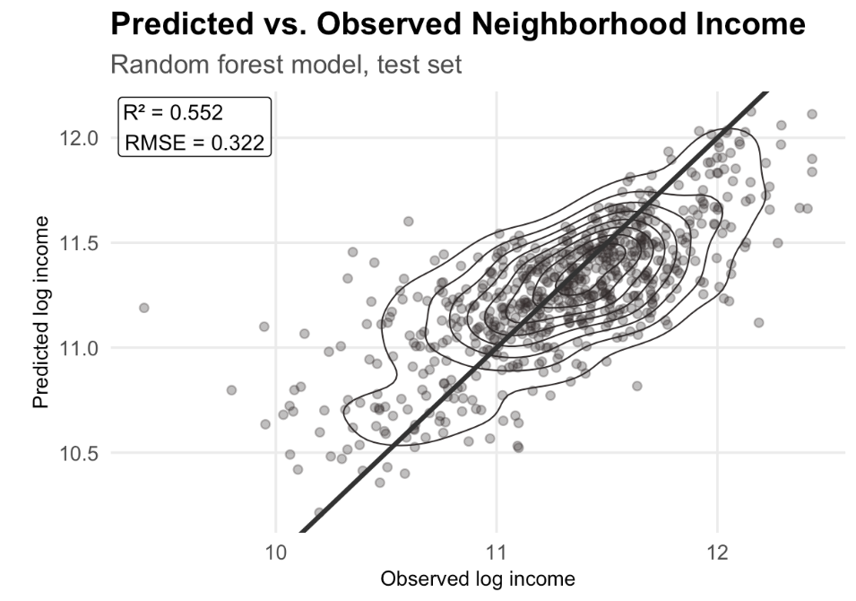
These results suggest that the housing service system encodes a substantial socioeconomic signal. While income is not fully determined by complaint characteristics, complaint data clearly reflect neighborhood-level economic context in systematic ways.
Feature Importance
To better understand which features drive predictive performance, I examine Random Forest permutation importance. Structural variables such as rent burden and housing stock emerge as the most influential predictors, followed by complaint composition measures and resolution metrics. Borough indicators also rank highly, reflecting persistent geographic heterogeneity:
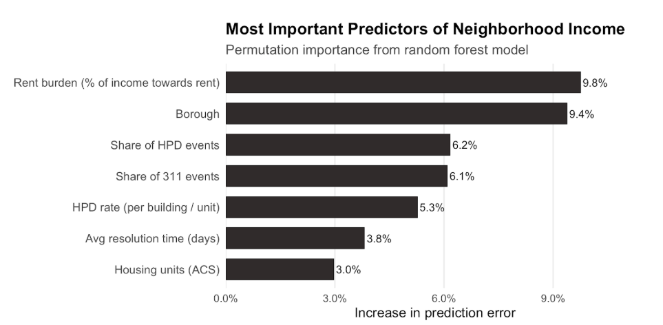
Permutation importance, the metric in the graph above, is measured as the average increase in out-of-sample prediction error when a feature’s values are randomly permuted while all other variables are held fixed. Features that produce larger drops in predictive accuracy are therefore more important to the model. Because this metric is tied directly to out-of-sample performance, it avoids many of the biases associated with impurity-based importance measures. Several clear patterns emerge. Rent burden is the most important predictor, highlighting the close relationship between housing cost pressure and neighborhood income. Borough indicators also rank highly, reflecting persistent geographic and administrative differences across New York City that are not fully captured by complaint metrics alone. Measures of complaint composition are particularly informative. The share of HPD complaints and share of 311 complaints rank above simple complaint counts, suggesting that how residents engage with housing service systems matters more than overall complaint volume. Consistent with this, HPD complaint rates carry more predictive weight than DOB-related measures, which are largely uninformative once other features are included. Resolution outcomes contribute meaningfully as well. Average resolution time and heat-related 311 complaints exhibit non-trivial importance, indicating that both service responsiveness and the presence of essential service failures vary systematically with neighborhood income. By contrast, DOB complaint share and rate add little incremental information. Overall, the importance rankings suggest that structural housing stress, geographic context, complaint composition, and service outcomes jointly encode neighborhood income. These results should be interpreted as predictive relationships rather than causal effects.
Discussion and Connection to the Overall Question
This analysis demonstrates that NYC’s housing complaint systems are closely linked to neighborhood income. Complaint intensity, complaint composition, and resolution outcomes together encode enough information to predict tract-level income with moderate to high accuracy. This finding has important implications for the team’s overall question. First, it suggests that income influences not only housing conditions, but also how residents interact with housing service systems and how those systems respond. Complaint data therefore reflect a mixture of physical conditions, reporting behavior, and administrative processes. Second, it cautions against interpreting raw complaint counts as direct measures of housing quality without accounting for socioeconomic context. For the team’s main OQ, these results imply that income-based disparities in complaint patterns may arise even if underlying housing conditions were identical. Analyses focused on complaint distribution, type, or resolution should therefore consider mechanisms such as differential reporting capacity, access to information, or landlord responsiveness. Several limitations remain. Spatial misclassification and missing geocodes may bias tract-level aggregates. Resolution time is an imperfect proxy for service effectiveness. Finally, this analysis uses a single year of data. Extending the framework to a multi-year panel and incorporating complementary records such as Housing Court filings would further clarify the relationship between income, housing conditions, and service interaction. Overall, my findings support the broader project conclusion that neighborhood income is a fundamental organizing dimension of NYC’s housing complaint system, shaping both where complaints arise and how they are processed.
Specific Questions
1. Are housing complaints more concentrated in lower-income neighborhoods?
This analysis investigates whether housing complaints in New York City are more concentrated in lower-income neighborhoods. The findings reveal a more complex reality: income influences complaint patterns in three distinct dimensions—spatial concentration, complaint type, and resolution outcomes.
Spatial Concentration of Complaints
When normalized by housing units, lower-income census tracts—particularly in the Bronx and northern Brooklyn—exhibit elevated rates of habitability-related complaints, such as lack of heat, water leaks, and unsanitary conditions. These patterns reflect aging infrastructure and persistent structural deficiencies. However, when normalized by population, higher-income neighborhoods in Manhattan and Queens often report equal or greater complaint rates per resident. This divergence suggests that complaint data reflect not only housing conditions but also differences in civic engagement and access to reporting systems.
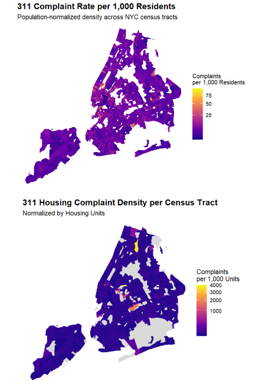
Variation in Complaint Types, Resolution Outcomes, Reporting Behavior
Income also shapes the nature of complaints. Lower-income neighborhoods predominantly report survival-related issues—heat, leaks, and sanitation—while higher-income areas more frequently report quality-of-life concerns such as noise, construction disruptions, and service delays. These differences reflect varying thresholds of housing adequacy and expectations across income groups.
Higher-income neighborhoods tend to receive faster and more consistent follow-up, likely due to greater visibility, advocacy, and fewer institutional barriers. In contrast, lower-income areas may underreport due to fear of retaliation, limited digital access, or distrust in government systems—resulting in unresolved housing stress that remains hidden in administrative data.
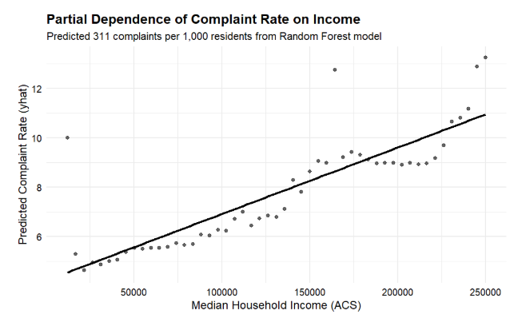
Partial Dependence of Complaint Rate on Income
The plot shows the predicted complaint rate per 1,000 residents from a Random Forest model. It reveals a positive correlation between income and complaint frequency, even after controlling for borough, housing units, and rent burden. This suggests that higher-income tracts are more likely to report issues, reinforcing the role of civic engagement in shaping complaint visibility. In summary, housing complaints in New York City are not a direct proxy for housing needs. Instead, they reflect a dynamic interplay between structural housing conditions, income levels, and reporting behavior. Lower-income neighborhoods concentrate physical housing stress, while higher-income neighborhoods concentrate reporting intensity. Understanding these patterns is essential for designing equitable housing interventions and interpreting complaint data responsibly.
2. Do Resolution Times Differ by Neighborhood Income Level?
Understanding whether public service outcomes vary across neighborhoods is central to evaluating equity in service delivery. While differences in average resolution times are often used to assess disparities, such averages can mask important distinctions between typical service experiences and rare but extreme delays. This analysis examines whether differences in NYC 311 complaint resolution times across income levels reflect everyday service performance or are driven primarily by unusual, long-running cases, and whether these patterns vary by complaint type.
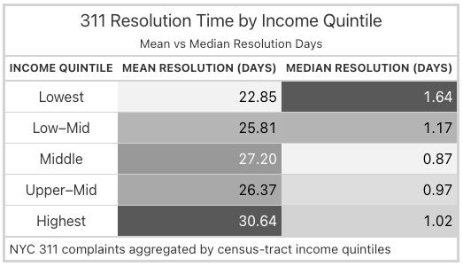
The analysis uses NYC 311 complaint records linked to census-tract median household income. Resolution time is measured as the number of days between complaint creation and closure, with neighborhoods grouped into income quintiles for comparison. A key feature of this data is that resolution times are highly skewed: most complaints are resolved quickly, while a small fraction take weeks or months to close. To ensure fair comparisons across neighborhoods, resolution times were examined both in raw form and after applying a logarithmic transformation that reduces the influence of extreme delays. Random Forest models were also used to assess the relative importance of income compared to other factors such as complaint type and seasonality. Overall, typical resolution times decline modestly with income, indicating that most complaints are resolved slightly faster in higher-income neighborhoods. However, average resolution times increase with income due to the presence of rare but very long delays. This divergence shows that income differences are driven primarily by extreme cases rather than by systematic differences in everyday service delivery.
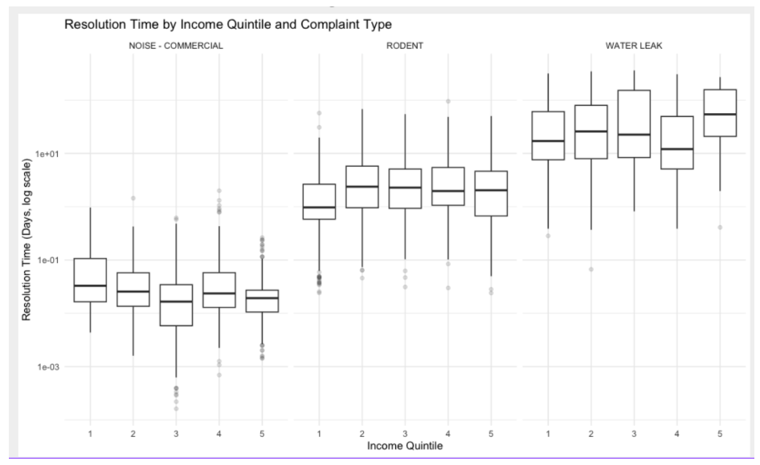
Importantly, the relationship between income and resolution time varies by complaint type. For commercial noise complaints, lower-income neighborhoods experience longer typical resolution times, while for water leak complaints the opposite pattern emerges, with longer typical resolution times in higher-income areas. Other complaint types show weaker or less consistent income gradients. These differences help explain why complaint type and seasonality are more influential predictors of resolution time than income alone. Taken together, these findings indicate that resolution times do differ by neighborhood income, but those differences appear mainly in extreme delays and depend strongly on the type of complaint being addressed. Future work could focus on identifying the causes of unusually long delays and evaluating targeted interventions to reduce them across all neighborhoods.
3. Are certain complaint types more prevalent in lower-income areas?
Our analysis shows that neighborhood income levels have a strong influence on housing complaints across New York City. After accounting for differences in housing size and density, lower-income neighborhoods consistently have higher rates of housing complaints. This suggests that residents in these areas are not just reporting more issues because they live in larger buildings, but because they experience more serious and ongoing housing problems. Overall, income is closely tied to where housing complaints are most concentrated across the city. This pattern is visible across multiple major complaint categories, with complaint rates declining steadily as median household income increases.
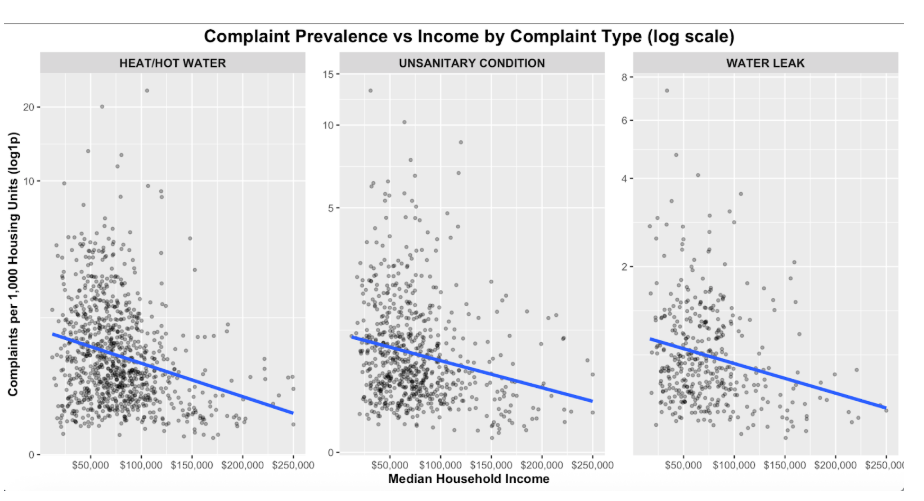
Income also affects the types of housing problems people report. Lower-income neighborhoods are more likely to experience complaints related to basic living conditions, including issues with heat and hot water, water leaks, and unsanitary conditions. These are essential living concerns rather than minor inconveniences, showing that income plays a role in the severity of housing issues. Statistical testing confirms that complaint patterns differ meaningfully across income levels, reinforcing the idea that these differences are not random.
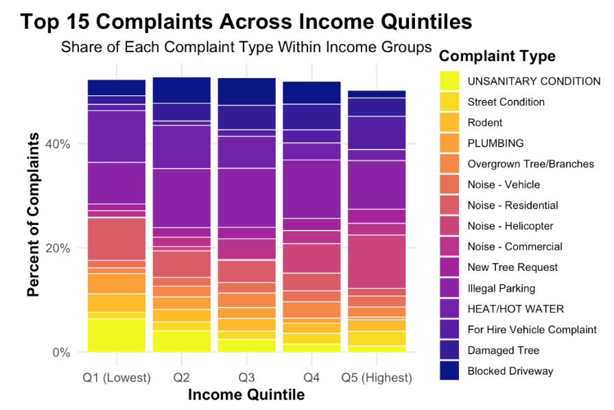
The stacked bar chart shows that habitability-related housing complaints account for a larger share of reports in the lowest income quintiles compared to higher-income neighborhoods. Finally, the relationship between income and complaints is not perfectly linear. Complaint rates drop sharply as income rises from low to middle levels, then level off in higher-income areas. This suggests that once neighborhoods reach a certain income threshold, housing conditions improve significantly, but additional income has a smaller impact.
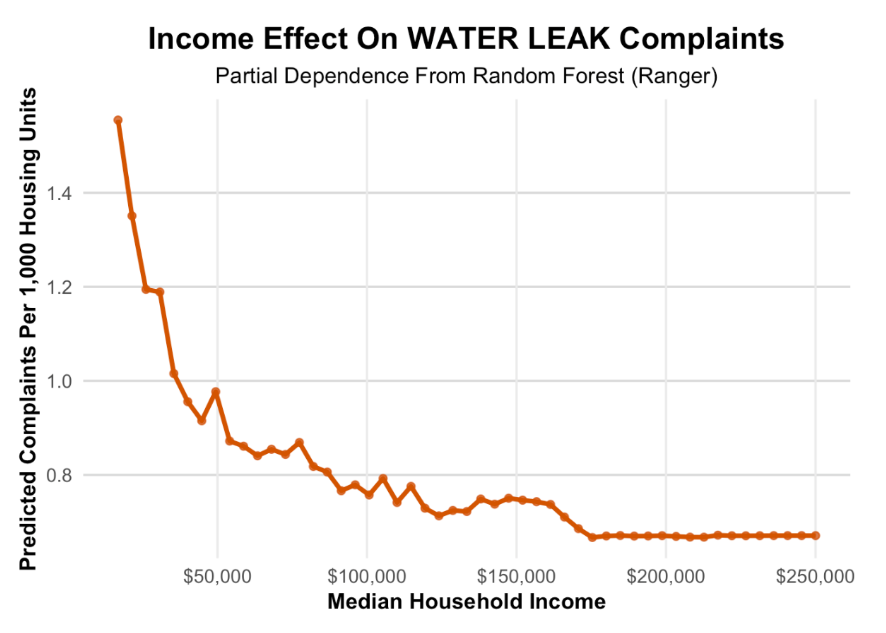
The partial dependence plot shows a nonlinear pattern, with complaints dropping quickly as income rises from low to middle levels and then leveling off in higher-income areas. Overall, the results show that neighborhood income strongly influences where housing complaints occur and what types of problems residents face, highlighting ongoing housing inequality across New York City.
4. Do lower-income neighborhoods experience higher rates of unresolved housing complaints?
This analysis examines whether neighborhood income levels are associated with the likelihood that housing complaints remain unresolved in New York City. By combining HPD and DOB complaint data with American Community Survey (ACS) income information at the census tract level, we find clear evidence that unresolved complaints are disproportionately concentrated in lower-income neighborhoods. Tracts in the lowest income quintiles consistently exhibit higher unresolved complaint rates compared to higher-income areas, suggesting that income is closely linked not only to where complaints occur, but to whether they are effectively addressed.
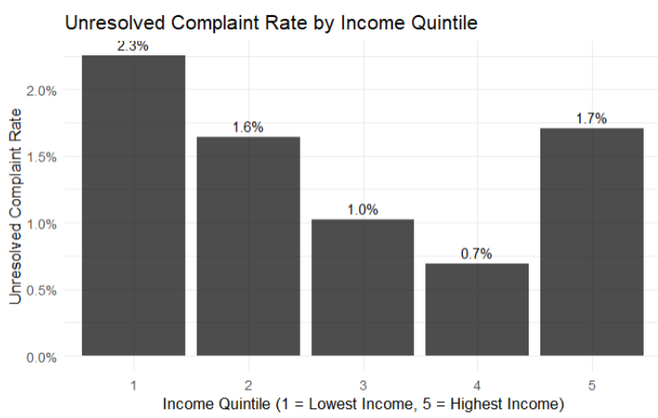
The analysis further shows that this pattern holds across agencies, although unresolved complaints are more prevalent in DOB records than in HPD. This indicates that enforcement and resolution processes may differ by agency, with more complex or structurally intensive issues often handled by DOB remaining open for longer periods, particularly in lower-income areas.
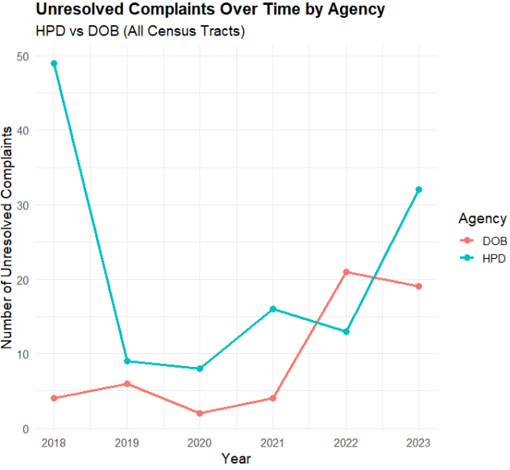
Time-based analyses reveal that unresolved complaints persist over multiple months and years in these neighborhoods, reinforcing the idea that resolution delays are not temporary but systematic. Logistic regression models support these descriptive findings, showing a negative relationship between neighborhood income and the probability of complaints remaining unresolved, even when accounting for housing units, rent burden, and complaint volume.
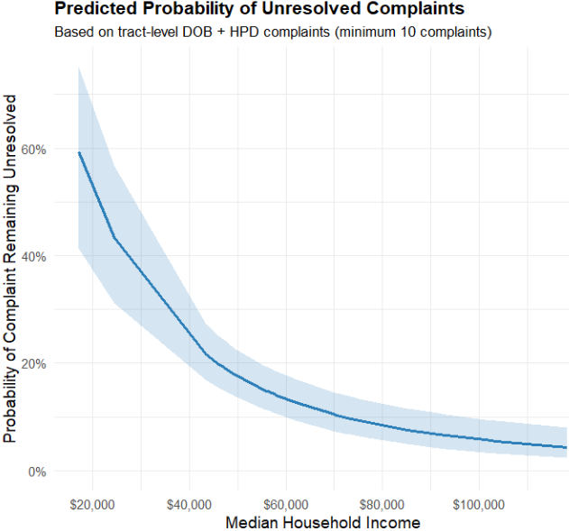
These findings rely on multiple administrative data sources, including NYC Open Data (HPD violations and DOB complaints from 2018–2023) and ACS 5-year estimates for neighborhood income and housing characteristics. While these datasets provide broad coverage and spatial detail, they also have limitations. Complaint data reflect reported issues rather than all housing problems, and unresolved status is based on administrative indicators that may not fully capture informal or delayed resolutions. Despite these constraints, the combined spatial, temporal, and agency-level analyses consistently point to the same conclusion: neighborhood income plays a meaningful role in shaping resolution outcomes. Lower-income communities not only face more housing challenges, but also experience slower and less complete responses highlighting persistent inequities in housing enforcement and accountability across New York City.
5. Do complaint patterns differentiate between public reports (311) and regulatory enforcement (DOB)?
This supporting question thoroughly examines the relationship between New York City resident initiated housing complaints submitted through the NYC311 system and regulatory enforcement actions taken by the New York City Department of Buildings.More specifically, it evaluates whether patterns in volume, timing, location, and types of public complaints aligns with the subsequent regulatory activity like inspections and violations.When answering this question, we don’t seek to establish a one to one relationship between both databases, but rather a correlation with public reporting and regulatory responses.
New York City relies heavily on the NYC311 as an insight in identifying housing issues, yet it is not clear as to what extent these reports translate into formal regulatory action.Using publicly available data from both databases in 2023, housing related complaints from both NYC311 and the New York City Department of Buildings were cleaned and aligned to enable a direct comparison across said databases. Figure 1: ‘Monthly Share of Complaints Within Each System (2023)’ is used to visually illustrate how complaint activity in each system evolves overtime within the time span of 2023.
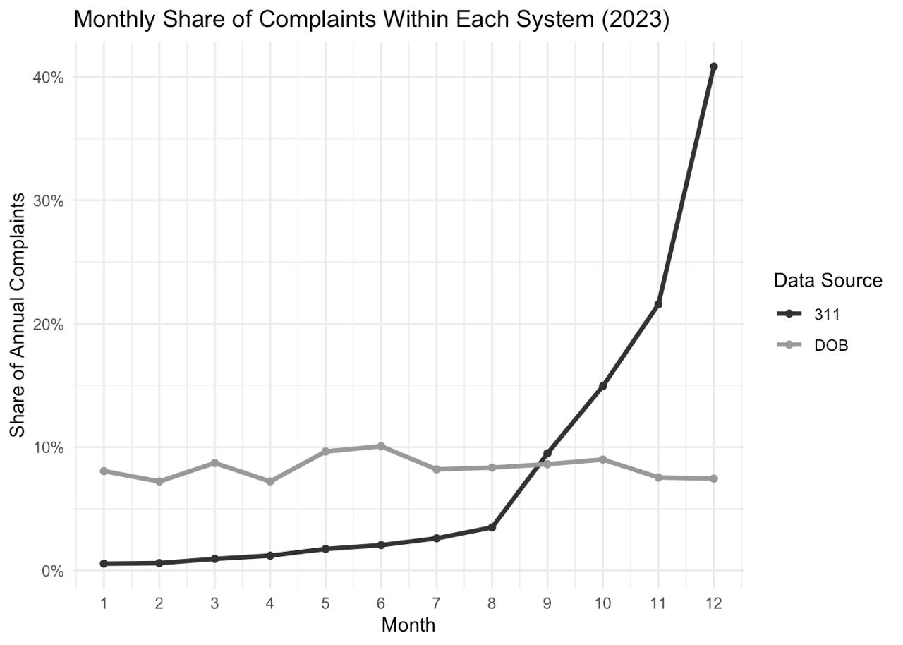
Results show in Figure 1 that 311 complaints outnumber DOB enforcement actions at a substantial rate, reflecting broader scope of public reporting in comparison to the selective nature of regulatory intervention. Despite this difference, both databases do show similar seasonal patterns, particularly in the final quarter of the year. This suggests that enforcement activity may respond to periods of drastically heightened public concern.
Additional analyses reveal that geographically, complaints in both datasets are mainly found and concentrated in Brooklyn, the Bronx, and Manhattan.However, the distribution of enforcement does not mirror the public’s reporting. These boroughs generate a high volume of 311 complaints, but in comparison there is a minuscule amount of DOB actions– this indicates uneven responsiveness across the city.
Overall, these findings suggest that while the 311 plays a meaningful role in shaping enforcement patterns, regulatory action remains uneven and limited relative to the volume of reported concerns. This raises important questions about equity, capacity, and accountability in New York City’s housing governance.
6. Is there spatial clustering of unresolved complaints in low-income areas?
This analysis examines whether unresolved 311 housing complaints in New York City are spatially clustered and whether such clustering is more common in lower-income neighborhoods. Using 311 complaint data from 2023, complaints were classified as unresolved when no closure date was recorded. Each complaint was assigned to a census tract using latitude and longitude coordinates and merged with tract-level income data from the American Community Survey. Census tracts were grouped into income quintiles to assess socioeconomic patterns. Local Moran’s I (LISA) was used to identify statistically significant spatial clusters of unresolved complaints. The hotspot map (Figure 6A) shows clear High–High clusters, indicating that unresolved complaints are geographically concentrated rather than randomly distributed across the city.
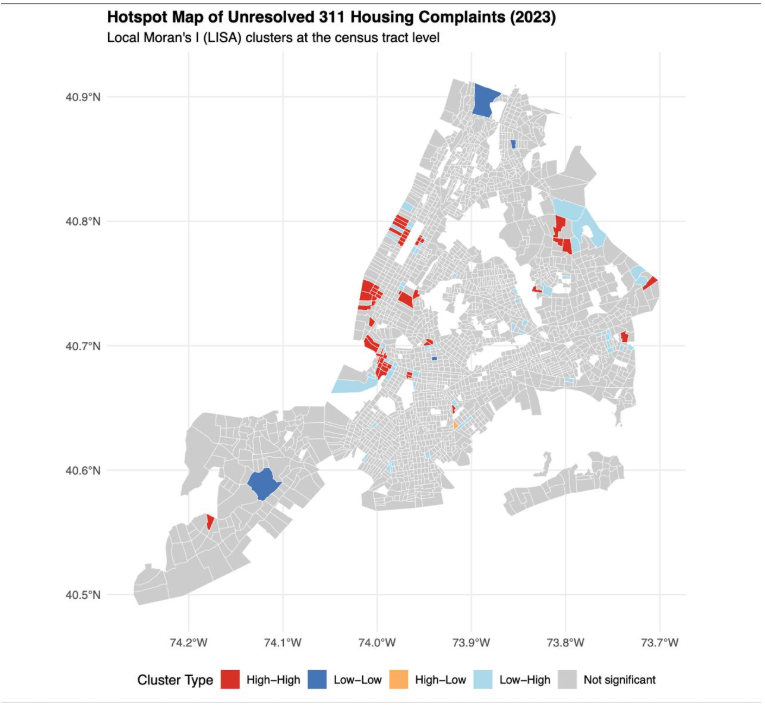
When these clusters are examined by income quintile (Figure 6B), a clear pattern emerges. High–High hotspots are concentrated primarily in lower-income neighborhoods (Q1 and Q2), while higher-income tracts are mostly classified as non-significant or Low–Low clusters. This suggests that unresolved housing issues persist more frequently and more spatially in lower-income areas.
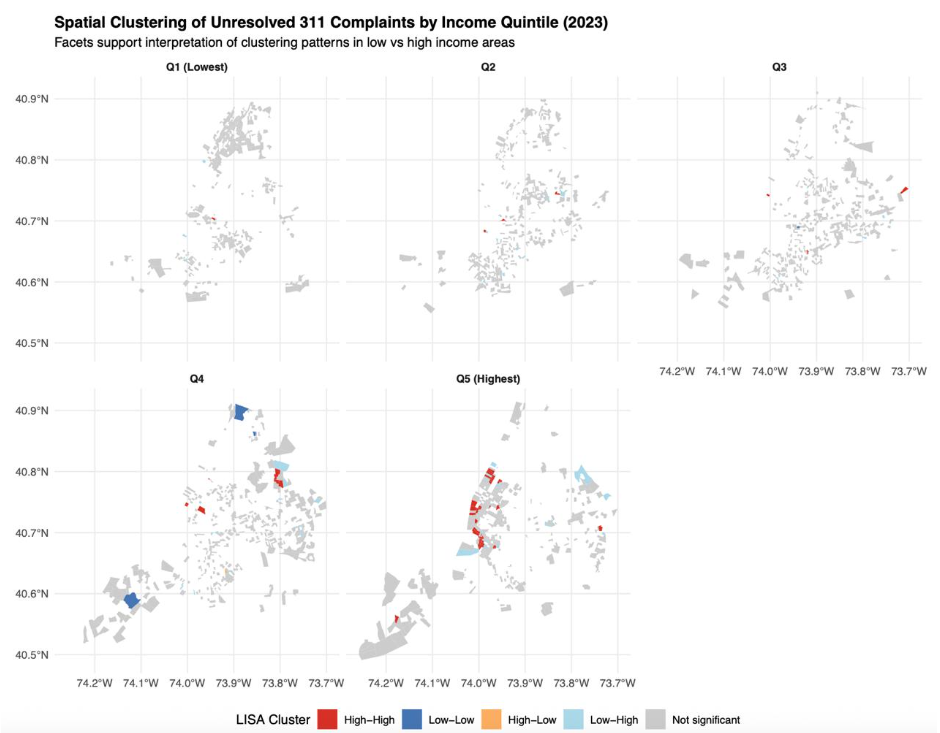
Overall, the results show that unresolved housing complaints are spatially clustered and that these clusters disproportionately affect low-income neighborhoods. This pattern highlights unequal exposure to unresolved housing problems and suggests the need for targeted enforcement and intervention in the most affected areas.
Integration of Findings
Individually, each supporting analysis quantifies a narrow outcome: complaint rates, complaint types, resolution time, or unresolved status but together they reveal how income shapes the lived experience of housing risk, not just reporting behavior. For example, while higher-income neighborhoods report slightly more complaints per capita (Supporting Question #1), lower-income neighborhoods experience qualitatively worse conditions: a higher share of complaints related to heat/hot water, water leaks, and unsanitary conditions (Supporting Question #3). These are essential habitability issues rather than minor inconveniences, indicating deeper structural housing problems in lower-income areas. Similarly, income effects on resolution time are subtle when looking at averages alone, but the tail behavior tells a different story (Supporting Question #2). Lower-income neighborhoods face greater risk of extreme delays and unresolved complaints, especially in DOB cases (Supporting Question #4). Quantitatively small differences therefore translate into a qualitative pattern of unequal enforcement and prolonged exposure to unsafe housing conditions. Together, these findings show that income does not simply affect how often people complain, but what they complain about and how effectively the system responds. No single supporting question captures the full housing-risk narrative. Only by combining them do several key patterns emerge: * Reporting vs. Risk Disconnect: Supporting Question #1 suggests higher-income areas report more complaints, but Supporting Questions #3 and #4 show that lower-income areas face more severe problems and higher unresolved rates. This reveals that complaint volume alone is a poor proxy for housing risk.
Systemic Inequality in Outcomes: When resolution time (SQ #2), unresolved complaints (SQ #4), and spatial clustering (SQ #6) are viewed together, a pattern of geographic and socioeconomic concentration of unresolved housing problems becomes visible—particularly in parts of the Bronx and northern Manhattan.
Public Reporting vs. Enforcement: Supporting Question #5 shows that 311 reporting and DOB enforcement behave differently across neighborhoods. Combining this with income analysis highlights that regulatory follow-through is uneven, even when complaints exist, reinforcing disparities beyond resident reporting behavior.
By integrating these questions, the analysis moves from isolated metrics to a system-level diagnosis: income shapes not just housing conditions, but the entire pathway from complaint to resolution.
Limitations
While the results are robust, several limitations remain:
Reporting Bias: Complaint data reflect both housing conditions and residents’ likelihood to report issues. Higher complaint rates do not necessarily imply worse conditions, especially across income groups.
Cross-Sectional Scope: The analysis is based on a limited time window. Without a multi-year panel, it cannot fully capture long-term dynamics or policy changes.
Causal Constraints: The models identify strong associations between income and housing outcomes but cannot establish causality between neighborhood income and enforcement behavior.
Unobserved Factors: Building ownership structure, landlord responsiveness, legal pressure, and tenant vulnerability are not directly observed but may influence outcomes.
These limitations suggest that findings should be interpreted as evidence of structural patterns, not definitive proof of intentional enforcement bias.
Overarching Answer
Neighborhood income is strongly related to housing complaint patterns in New York City. After controlling for housing size, rent burden, and borough, lower-income neighborhoods tend to face more serious housing problems, especially issues related to basic living conditions such as heat and hot water, water leaks, and sanitation. In contrast, higher-income neighborhoods often submit more complaints overall, which suggests that complaint data capture not only housing conditions but also differences in residents’ ability and willingness to report problems. Income also shapes the types of complaints residents make and how those complaints are addressed. Lower-income areas report a larger share of essential habitability complaints, while higher-income neighborhoods are more likely to report quality-of-life issues. Resolution outcomes differ as well. Complaints in lower-income neighborhoods are more likely to remain unresolved or experience longer delays, particularly for cases involving building enforcement. This indicates that income influences both housing risk and the effectiveness of the city’s response. Overall, neighborhood income is a strong predictor of the intensity, composition, and resolution of housing-related complaints. Housing complaint data, therefore, reflect more than just physical housing conditions as they also reflect social and economic differences in reporting behavior and service responsiveness. These findings show that income is a key factor shaping how housing problems appear and persist across New York City.
Future Work
With additional time, this analysis could be extended to a multi-year panel spanning several years of housing complaints and ACS estimates. A panel structure would allow the model to distinguish persistent neighborhood characteristics from short-run shocks, such as weather-driven complaint spikes or temporary enforcement changes. A second natural extension would be to examine systematic prediction errors in the Random Forest model by identifying tracts where income is consistently over or under-predicted. Such patterns could reveal neighborhoods where complaint behavior deviates from what income alone would suggest, potentially reflecting differences in reporting norms, tenant organizing, landlord responsiveness, or administrative enforcement. Relatedly, future work could explore interaction effects, such as whether the relationship between income and complaints depends jointly on rent burden and housing stock characteristics, instead of treating predictors as additive. Finally, incorporating NYC Housing Court eviction filings would help distinguish whether complaint patterns primarily reflect underlying housing instability or differences in engagement with complaint systems, strengthening the interpretation of complaint data as signals of neighborhood housing conditions.
Sources
Wang, L., Qian, C., Kats, P., Kontokosta, C., & Sobolevsky, S. (2017). Structure of 311 service requests as a signature of urban location.Plos One Journal
Kontokosta, C. E., & Hong, B. (2021). Bias in smart city governance: How socio-spatial disparities in 311 complaint behavior impact the fairness of data-driven decisions.
Sustainable Cities and Society